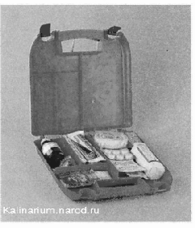

Меры безопасности при обслуживании и ремонте автомобиля
Прежде чем начинать ремонт или работы по обслуживанию автомобиля, следует позаботиться о соблюдении правил безопасности. Многие пренебрегают этим, а зря! Сколько травм, пожаров и других бед случилось, казалось бы, из-за пустяка.
Перед тем как отправиться в гараж, обязательно предупредите об этом своих близких и захватите с собой мобильный телефон.
Маленькие дети любят наблюдать за работой взрослых, но им не место в гараже, если предстоит долгий и серьезный ремонт. Особенно если мы работаем с растворителями, производим сварку или снимаем тяжелые агрегаты. Домашние животные также должны остаться дома.
Двери гаража должны свободно и быстро открываться изнутри и снаружи, а если позволяет погода, то их вообще лучше держать открытыми. Проход к дверям не должен быть загроможден.
На видном месте обязательно разместите полностью укомплектованную аптечку. Препараты, входящие в ее состав, не должны быть просрочены.

Исправный огнетушитель всегда должен быть в буквальном смысле под рукой, причем не тот, что вы возите с собой в машине, а специальный, гаражный, емкостью не менее 5 л. При сварочных работах |
|
держите поблизости большую садовую лейку с водой.
Выхлопные газы содержат оксид углерода (СО), или угарный газ, — вещество, крайне опасное для жизни, к тому же не имеющее запаха и цвета. Поэтому перед запуском двигателя следует обеспечить интенсивную вентиляцию помещения гаража (просто открытой двери мало). Необходимо открыть ворота нараспашку или, в холодное время года, обеспечить отвод газов наружу через шланг, плотно надетый на выхлопную тpy6y. При работающем двигателе люди не должны находиться в смотровой канаве.
Одежда должна быть удобной, не стесняющей движений, без свисающих краев и лямок, которые могут попасть во вращающиеся механизмы. Для защиты глаз при работе под кузовом или пользовании электроинструментом понадобятся очки с пластмассовыми стеклами или, лучше, специальная прозрачная маска. Перчатки на руках тоже
|
|
иногда не помешают, а при некоторых видах работ (ремонт кузова, снятие тяжелых агрегатов) они просто необходимы. Для сварочных работ используйте брезентовые краги и специальный защитный щиток со светофильтром. А вот кольца, перстни и часы совершенно излишни.
Перед началом работы выньте ключ из замка зажигания.
При выполнении работы не торопитесь, тщательно подготавливая каждую операцию.
Бензин может воспламениться от чего угодно: проскочившей искры, зажженной спички, при попадании на раскаленный коллектор или во время сварочных работ. Будьте особенно осторожны при любых операциях с топливной системой.
Внимание!
топливо в топливопроводе находится под давлением, и перед тем как приступить к работе, необходимо сбросить давление (подробнее, см. «Топливопровод - сброс давления»).
Даже небольшое количество пролитого топлива немедленно удалите ветошью (которую сразу вынесите за дверь) и проветрите помещение. Пока запах бензина не исчезнет, нельзя работать с открытым пламенем, включать и выключать электроприборы, снимать и надевать клеммы на выводы аккумуляторной батареи. Пары бензина тяжелее воздуха, они могут заполнить смотровую канаву и терпеливо ждать брошенного туда окурка. Все вышесказанное относится не только к бензину, но и к различным растворителям, концентрация которых в воздухе может стать опасно высокой при окрасочных работах или промывке деталей.
Курить в помещении гаража нельзя. |
|